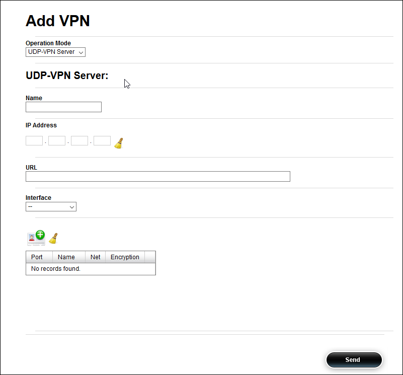
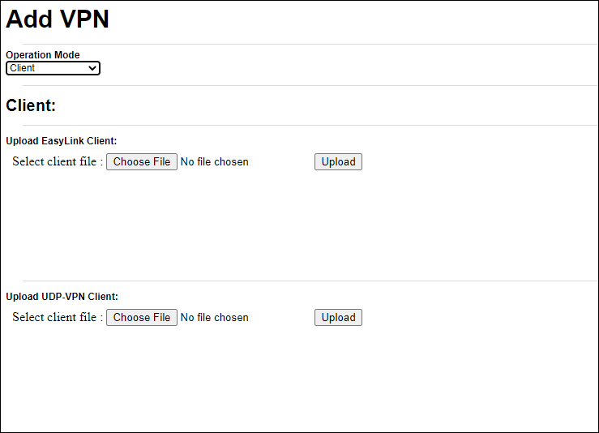

3 Connectivity Setup¶
After the DVG units physical interfaces have been configured, it is necessary to connect the DVGs to each other. In order to ensure that multicast streams will be routed over the internet a VPN will be used.
3.1 Configuring UDP VPN¶
The UDP VPN connection is made up of a client and a server. The client and server are independent from the sender and the receiver.
3.1.1 Configuring the UDP VPN Server¶
The UDP VPN Server is used to host client connections.
Procedure
Click on the icon to open the Add VPN configuration window.
In the Operation Mode pane, select UDP-VPN Server from the drop-down list.
In the Name pane, enter a name.
In the IP Address field enter an IP address for the server.
In the URL pane, enter a URL for the server.
In the interface pane, select from the drop-down list the interface with the configured the internet connection.
Click Send to save the configuration.
After the server has been configured, the UDP VPN client files need to be built.
{kind=link}
{kind=link}
3.1.2 Building the UDP VPN Client Files¶
The UDP VPN client files are needed to connect to the UDP VPN server. The client files are built on the server and then uploaded to the unit that will be the client.
Procedure
Click the Tools tab, then click the File Operations menu, then click the UDP VPN menu, then click on the download menu item.
On the Remote Client line, select the name of the server from the drop-down menu.
Click download to download the client files.
Note
Client files need to be saved on the management PC, or on a disk on key, in order to upload them on the client unit.
3.1.3 Uploading the UDP VPN Client¶
The UDP VPN client file needs to be uploaded to the client DVG unit. Then it needs to be activated.
Procedure
Click the icon to open the Add VPN configuration window.
In the In the Operation Mode pane, select Client form the drop-down list.
In the Upload client pane, select a client file by clicking the Choose File button. Navigate to the location of the saved file, then select it and click open.
Click Upload to upload the client file.
In the VPN name field, enter a logical name for the VPN.
In the Bind to Interface field, from the drop-down list select the physical interface the client will use to connect to the server.
Click the Click Here link to activate the client file.
{kind=link}